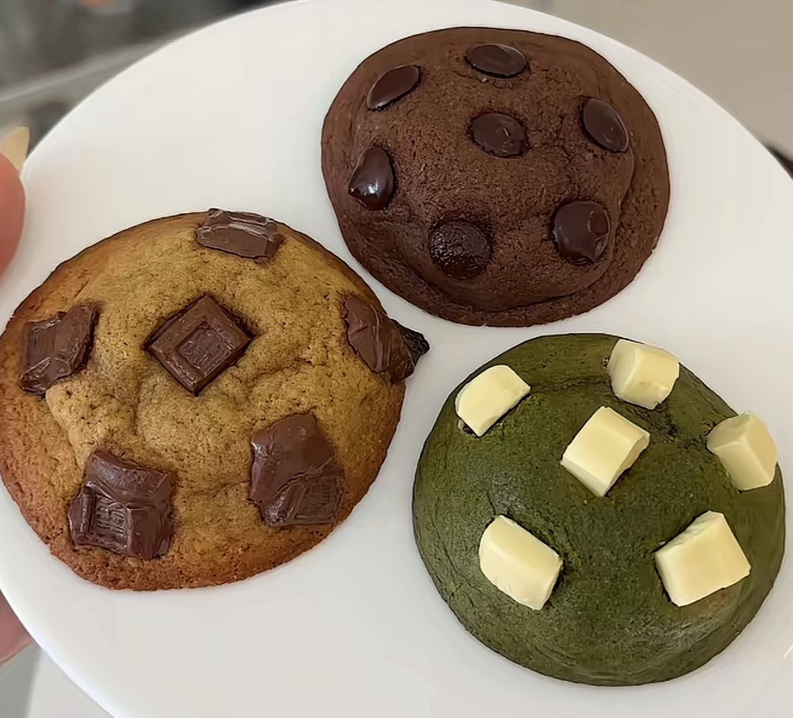
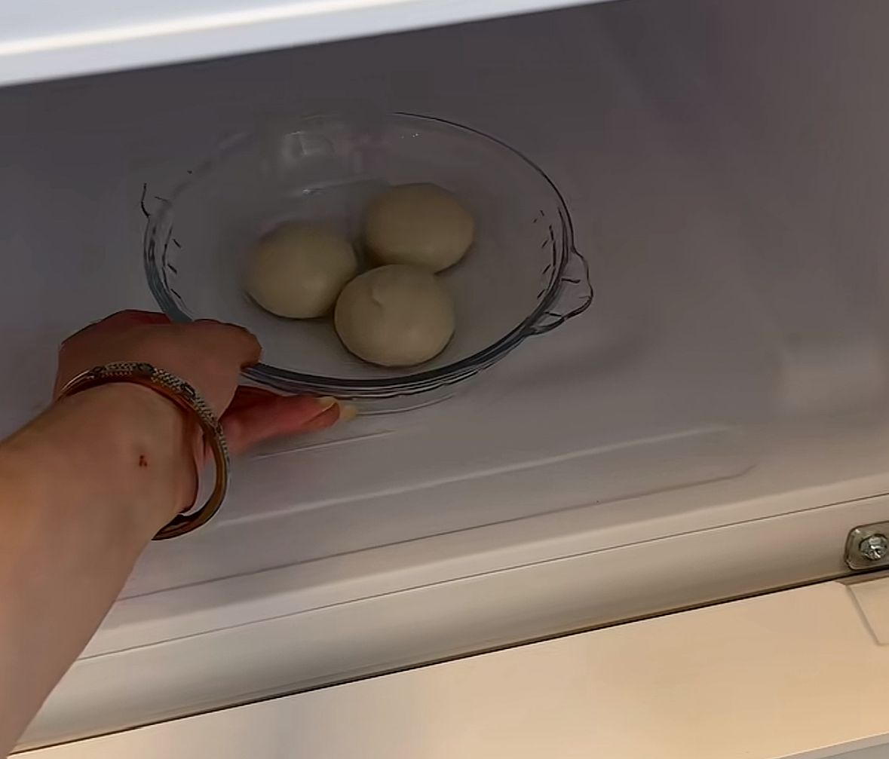
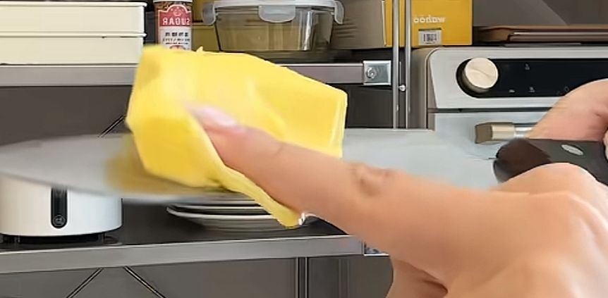
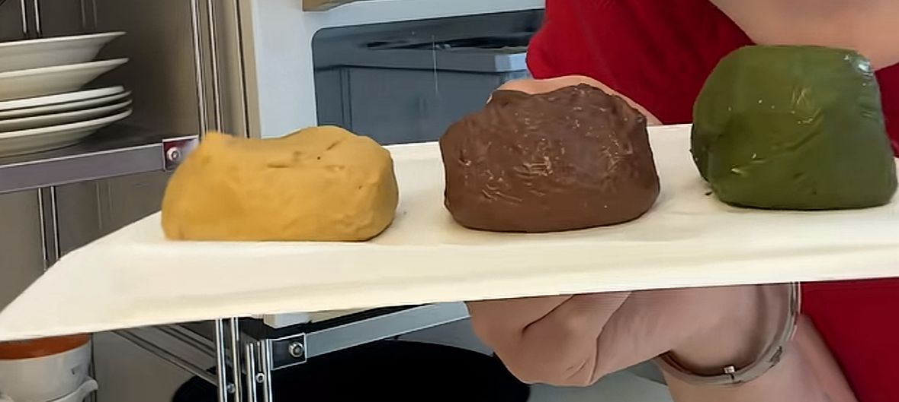
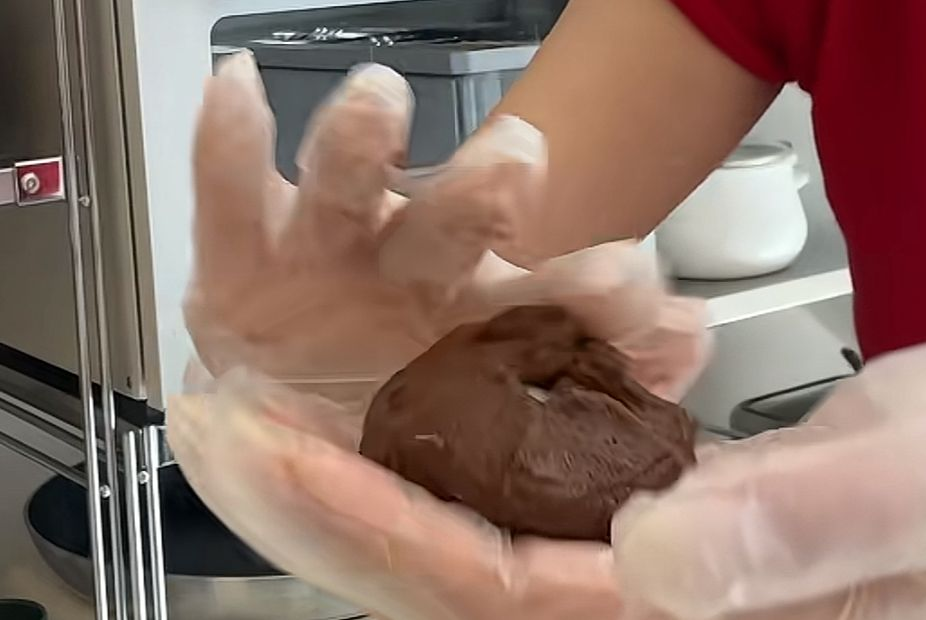
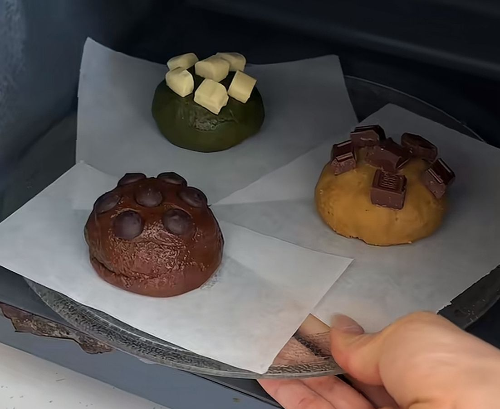

汤圆 Cookie
Directory:

Ingredients (for 3 cookies):
- 3 tang yuan (汤圆)
- 28g butter
- 45g flour (any type)
- 20g sugar
- 0.5g salt
- 0.3g baking powder (泡打粉)
- 0.3g baking soda (小苏打)
- 1 room temperature egg (常温鸡蛋)
- 4g milk
- 1g flavoured powder (optional)
- toppings you like e.g. chocolate chips, nuts (optional)
Procedures:
- Put the tang yuan in the freezer (冻汤圆)

- Melt the butter until can be pressed down easily and put in a bowl (软化黄油)

- Pour the flour, sugar, salt, baking powder and baking soda into the bowl with the butter
- Crack the room temperature egg into the bowl and pour in the milk
- Mix everything together until a dough is formed
- Split the dough into smaller pieces about 35g each (每坨35g左右)

- Add the flavoured powder and mix well (optional)
- Flatten the smaller dough and wrap around the frozen tang yuan
(面团压扁，把冻汤圆包进去)

- Add on the toppings (optional)
- Place the cookies on a plate with some spacing in between each other and put in the microwave
(把饼干比较有距离的摆在盘子上，放进微波炉)

- Microwave on HIGH for 2 minutes (微波炉高火2分钟)
Back to HOME PAGE: Home Page